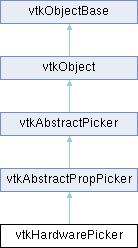

|
Etrek
|
|
Etrek
|
pick a point or snap to point of an actor/prop using graphics hardware More...
#include <vtkHardwarePicker.h>

Public Member Functions | |
| vtkTypeMacro (vtkHardwarePicker, vtkAbstractPropPicker) | |
| void | PrintSelf (ostream &os, vtkIndent indent) override |
| vtkGetMacro (NormalFlipped, bool) | |
| int | Pick (double selectionX, double selectionY, double selectionZ, vtkRenderer *renderer) override |
| vtkSetMacro (SnapToMeshPoint, bool) | |
| vtkGetMacro (SnapToMeshPoint, bool) | |
| vtkBooleanMacro (SnapToMeshPoint, bool) | |
| vtkSetMacro (PixelTolerance, int) | |
| vtkGetMacro (PixelTolerance, int) | |
| vtkGetObjectMacro (Mapper, vtkAbstractMapper3D) | |
| vtkGetObjectMacro (DataSet, vtkDataSet) | |
| vtkGetObjectMacro (DataObject, vtkDataObject) | |
| vtkGetObjectMacro (CompositeDataSet, vtkCompositeDataSet) | |
| vtkGetMacro (FlatBlockIndex, vtkIdType) | |
| vtkGetMacro (PointId, vtkIdType) | |
| vtkGetMacro (CellId, vtkIdType) | |
| vtkGetMacro (SubId, int) | |
| vtkGetMacro (CellGridCellTypeId, vtkIdType) | |
| vtkGetMacro (CellGridSourceSpecId, vtkIdType) | |
| vtkGetMacro (CellGridTupleId, vtkIdType) | |
| vtkGetVector3Macro (PCoords, double) | |
| vtkGetVectorMacro (PickNormal, double, 3) | |
| Public Member Functions inherited from vtkAbstractPropPicker | |
| vtkTypeMacro (vtkAbstractPropPicker, vtkAbstractPicker) | |
| virtual vtkProp * | GetViewProp () |
| virtual vtkProp3D * | GetProp3D () |
| virtual vtkActor * | GetActor () |
| virtual vtkActor2D * | GetActor2D () |
| virtual vtkVolume * | GetVolume () |
| virtual vtkAssembly * | GetAssembly () |
| virtual vtkPropAssembly * | GetPropAssembly () |
| virtual void | SetPath (vtkAssemblyPath *) |
| vtkGetObjectMacro (Path, vtkAssemblyPath) | |
| Public Member Functions inherited from vtkAbstractPicker | |
| vtkTypeMacro (vtkAbstractPicker, vtkObject) | |
| int | Pick (double selectionPt[3], vtkRenderer *ren) |
| virtual int | Pick3DPoint (double[3], vtkRenderer *) |
| virtual int | Pick3DRay (double[3], double[4], vtkRenderer *) |
| void | InitializePickList () |
| void | AddPickList (vtkProp *) |
| void | DeletePickList (vtkProp *) |
| vtkPropCollection * | GetPickList () |
| vtkGetObjectMacro (Renderer, vtkRenderer) | |
| vtkGetVectorMacro (SelectionPoint, double, 3) | |
| vtkGetVectorMacro (PickPosition, double, 3) | |
| vtkSetMacro (PickFromList, vtkTypeBool) | |
| vtkGetMacro (PickFromList, vtkTypeBool) | |
| vtkBooleanMacro (PickFromList, vtkTypeBool) | |
| Public Member Functions inherited from vtkObject | |
| vtkBaseTypeMacro (vtkObject, vtkObjectBase) | |
| virtual void | DebugOn () |
| virtual void | DebugOff () |
| bool | GetDebug () |
| void | SetDebug (bool debugFlag) |
| virtual void | Modified () |
| virtual vtkMTimeType | GetMTime () |
| void | PrintSelf (ostream &os, vtkIndent indent) override |
| void | RemoveObserver (unsigned long tag) |
| void | RemoveObservers (unsigned long event) |
| void | RemoveObservers (const char *event) |
| void | RemoveAllObservers () |
| vtkTypeBool | HasObserver (unsigned long event) |
| vtkTypeBool | HasObserver (const char *event) |
| vtkTypeBool | InvokeEvent (unsigned long event) |
| vtkTypeBool | InvokeEvent (const char *event) |
| std::string | GetObjectDescription () const override |
| unsigned long | AddObserver (unsigned long event, vtkCommand *, float priority=0.0f) |
| unsigned long | AddObserver (const char *event, vtkCommand *, float priority=0.0f) |
| vtkCommand * | GetCommand (unsigned long tag) |
| void | RemoveObserver (vtkCommand *) |
| void | RemoveObservers (unsigned long event, vtkCommand *) |
| void | RemoveObservers (const char *event, vtkCommand *) |
| vtkTypeBool | HasObserver (unsigned long event, vtkCommand *) |
| vtkTypeBool | HasObserver (const char *event, vtkCommand *) |
| template<class U, class T> | |
| unsigned long | AddObserver (unsigned long event, U observer, void(T::*callback)(), float priority=0.0f) |
| template<class U, class T> | |
| unsigned long | AddObserver (unsigned long event, U observer, void(T::*callback)(vtkObject *, unsigned long, void *), float priority=0.0f) |
| template<class U, class T> | |
| unsigned long | AddObserver (unsigned long event, U observer, bool(T::*callback)(vtkObject *, unsigned long, void *), float priority=0.0f) |
| vtkTypeBool | InvokeEvent (unsigned long event, void *callData) |
| vtkTypeBool | InvokeEvent (const char *event, void *callData) |
| virtual void | SetObjectName (const std::string &objectName) |
| virtual std::string | GetObjectName () const |
| Public Member Functions inherited from vtkObjectBase | |
| const char * | GetClassName () const |
| virtual vtkTypeBool | IsA (const char *name) |
| virtual vtkIdType | GetNumberOfGenerationsFromBase (const char *name) |
| virtual void | Delete () |
| virtual void | FastDelete () |
| void | InitializeObjectBase () |
| void | Print (ostream &os) |
| void | Register (vtkObjectBase *o) |
| virtual void | UnRegister (vtkObjectBase *o) |
| int | GetReferenceCount () |
| void | SetReferenceCount (int) |
| bool | GetIsInMemkind () const |
| virtual void | PrintHeader (ostream &os, vtkIndent indent) |
| virtual void | PrintTrailer (ostream &os, vtkIndent indent) |
| virtual bool | UsesGarbageCollector () const |
Static Public Member Functions | |
| static vtkHardwarePicker * | New () |
| Static Public Member Functions inherited from vtkObject | |
| static vtkObject * | New () |
| static void | BreakOnError () |
| static void | SetGlobalWarningDisplay (vtkTypeBool val) |
| static void | GlobalWarningDisplayOn () |
| static void | GlobalWarningDisplayOff () |
| static vtkTypeBool | GetGlobalWarningDisplay () |
| Static Public Member Functions inherited from vtkObjectBase | |
| static vtkTypeBool | IsTypeOf (const char *name) |
| static vtkIdType | GetNumberOfGenerationsFromBaseType (const char *name) |
| static vtkObjectBase * | New () |
| static void | SetMemkindDirectory (const char *directoryname) |
| static bool | GetUsingMemkind () |
Protected Member Functions | |
| void | Initialize () override |
| int | TypeDecipher (vtkProp *, vtkAbstractMapper3D **) |
| void | FixNormalSign () |
| int | ComputeSurfaceNormal (vtkDataSet *data, vtkCell *cell, double *weights) |
| void | ComputeIntersectionFromDataSet (vtkDataSet *ds) |
| Protected Member Functions inherited from vtkObject | |
| void | RegisterInternal (vtkObjectBase *, vtkTypeBool check) override |
| void | UnRegisterInternal (vtkObjectBase *, vtkTypeBool check) override |
| void | InternalGrabFocus (vtkCommand *mouseEvents, vtkCommand *keypressEvents=nullptr) |
| void | InternalReleaseFocus () |
| Protected Member Functions inherited from vtkObjectBase | |
| virtual void | ReportReferences (vtkGarbageCollector *) |
| vtkObjectBase (const vtkObjectBase &) | |
| void | operator= (const vtkObjectBase &) |
Protected Attributes | |
| bool | SnapToMeshPoint |
| int | PixelTolerance |
| vtkNew< vtkPropCollection > | PickableProps |
| vtkSmartPointer< vtkSelection > | HardwareSelection |
| double | NearRayPoint [3] |
| double | FarRayPoint [3] |
| vtkAbstractMapper3D * | Mapper |
| vtkDataSet * | DataSet |
| vtkDataObject * | DataObject |
| vtkCompositeDataSet * | CompositeDataSet |
| vtkIdType | FlatBlockIndex |
| vtkIdType | PointId |
| vtkIdType | CellId |
| int | SubId |
| vtkIdType | CellGridCellTypeId |
| vtkIdType | CellGridSourceSpecId |
| vtkIdType | CellGridTupleId |
| double | PCoords [3] |
| double | PickNormal [3] |
| bool | NormalFlipped |
| Protected Attributes inherited from vtkAbstractPropPicker | |
| vtkAssemblyPath * | Path |
| Protected Attributes inherited from vtkAbstractPicker | |
| vtkRenderer * | Renderer |
| double | SelectionPoint [3] |
| double | PickPosition [3] |
| vtkTypeBool | PickFromList |
| vtkPropCollection * | PickList |
| Protected Attributes inherited from vtkObject | |
| bool | Debug |
| vtkTimeStamp | MTime |
| vtkSubjectHelper * | SubjectHelper |
| std::string | ObjectName |
| Protected Attributes inherited from vtkObjectBase | |
| std::atomic< int32_t > | ReferenceCount |
| vtkWeakPointerBase ** | WeakPointers |
Additional Inherited Members | |
| Static Protected Member Functions inherited from vtkObjectBase | |
| static vtkMallocingFunction | GetCurrentMallocFunction () |
| static vtkReallocingFunction | GetCurrentReallocFunction () |
| static vtkFreeingFunction | GetCurrentFreeFunction () |
| static vtkFreeingFunction | GetAlternateFreeFunction () |
pick a point or snap to point of an actor/prop using graphics hardware
vtkHardwarePicker is used to pick point or snap to point of an actor/prop given a selection point (in display coordinates) and a renderer. This class uses graphics hardware/rendering system to pick rapidly (as compared to using ray casting as does vtkCellPicker and vtkPointPicker). This class determines the actor/prop pick position, and pick normal in world coordinates; pointId is determined if snapping is enabled, otherwise the cellId is determined. if no actor/prop is picked, pick position = camera focal point, and pick normal = camera plane normal.
|
protected |
Compute the intersection using provided dataset
|
protected |
Compute the intersection normal either by interpolating the point normals at the intersected point, or by computing the plane normal for the 2D intersected face/cell.
|
protected |
Fix normal sign in case the orientation of the picked cell is wrong. When you cast a ray to a 3d object from a specific view angle (camera normal), the angle between the camera normal and the normal of the cell surface that the ray intersected, can have an angle up to pi / 2. This is true because you can't see surface objects with a greater angle than pi / 2, therefore, you can't pick them. In case an angle greater than pi / 2 is computed, we flip the picked normal.
|
overrideprotectedvirtual |
Reimplemented from vtkAbstractPropPicker.
|
overridevirtual |
Perform the pick operation set the PickedProp.
If something is picked, 1 is returned, and PickPosition, PickNormal, and the rest of the results variables) are extracted from intersection with the PickedProp.
If something is not picked, 0 is returned, and PickPosition and PickNormal are extracted from the camera's focal plane.
Implements vtkAbstractPicker.
|
overridevirtual |
Methods invoked by print to print information about the object including superclasses. Typically not called by the user (use Print() instead) but used in the hierarchical print process to combine the output of several classes.
Reimplemented from vtkAbstractPropPicker.
| vtkHardwarePicker::vtkGetMacro | ( | CellGridCellTypeId | , |
| vtkIdType | ) |
Get the id of the picked cell type in a vtkCellGrid
If a prop is picked, cellGridCellTypeId >= 0
if a prop is not picked, CellGridCellTypeId = -1.
| vtkHardwarePicker::vtkGetMacro | ( | CellGridSourceSpecId | , |
| vtkIdType | ) |
Get the id of the picked cell/side spec (the vtkDGCell::Source object) in a vtkCellGrid's cell type.
If a prop is picked:
1) If a cell spec was picked, CellGridSourceSpecId = 0. 2) If a side spec was picked, the CellGridSourceSpecId will be >= 1.
if a prop is not picked, CellGridSourceSpecId = -1.
| vtkHardwarePicker::vtkGetMacro | ( | CellGridTupleId | , |
| vtkIdType | ) |
Get the id of the tuple in the cell/side's connectivity array in a vtkCellGrid
If a prop is picked, CellGridTupleId >= 0
if a prop is not picked, CellGridTupleId = -1.
| vtkHardwarePicker::vtkGetMacro | ( | CellId | , |
| vtkIdType | ) |
Get the id of the picked cell.
If a prop is picked:
1) If SnapOnMeshPoint is on, CellId = -1. 2) If SnapOnMeshPoint is off, the cellId of the prop's dataset will be returned
if a prop is not picked, CellId = -1.
| vtkHardwarePicker::vtkGetMacro | ( | FlatBlockIndex | , |
| vtkIdType | ) |
Get the flat block index of the vtkDataSet in the composite dataset that was picked (if any). If nothing was picked or a non-composite data object was picked then -1 is returned.
| vtkHardwarePicker::vtkGetMacro | ( | NormalFlipped | , |
| bool | ) |
Get if normal is flipped.
The normal will be flipped if point normals don't exist and the angle between the PickedNormal and the camera plane normal is more than pi / 2.
| vtkHardwarePicker::vtkGetMacro | ( | PointId | , |
| vtkIdType | ) |
Get the id of the picked point.
If a prop is picked:
1) if SnapOnMeshPoint is on, the pointId of the prop's dataset will be returned 2) If SnapOnMeshPoint is off, PointId = -1;
If a prop is not picked, PointId = -1;
| vtkHardwarePicker::vtkGetMacro | ( | SubId | , |
| int | ) |
Get the subId of the picked cell. This is useful, for example, if the data is made of triangle strips.
If a prop is picked:
1) If SnapOnMeshPoint is on, SubId = -1. 2) If SnapOnMeshPoint is off and the picked cell is a triangle strip, the subId of the intersected triangle will be returned, otherwise SubId = -1.
If a prop is not picked, SubId = -1.
| vtkHardwarePicker::vtkGetObjectMacro | ( | CompositeDataSet | , |
| vtkCompositeDataSet | ) |
Get a pointer to the composite dataset that was picked (if any). If nothing was picked or a non-composite data object was picked then nullptr is returned.
Note: Use vtkWeakPointer. This is because the CompositeDataSet may be deleted.
| vtkHardwarePicker::vtkGetObjectMacro | ( | DataObject | , |
| vtkDataObject | ) |
Get a pointer to the dataobject that was picked (if any). If nothing was picked then nullptr is returned.
Note: Use vtkWeakPointer. This is because the DataObject may be deleted.
| vtkHardwarePicker::vtkGetObjectMacro | ( | DataSet | , |
| vtkDataSet | ) |
Get a pointer to the dataset that was picked (if any). If nothing was picked then nullptr is returned.
Note: Use vtkWeakPointer. This is because the DataSet may be deleted.
| vtkHardwarePicker::vtkGetObjectMacro | ( | Mapper | , |
| vtkAbstractMapper3D | ) |
Return mapper that was picked (if any).
Note: Use vtkWeakPointer. This is because the Mapper may be deleted.
| vtkHardwarePicker::vtkGetVector3Macro | ( | PCoords | , |
| double | ) |
Get the parametric coordinates of the picked cell. PCoords can be used to compute the weights that are needed to interpolate data values within the cell.
If a prop is picked:
1) If SnapOnMeshPoint is on, PCoords will be a vector of std::numeric_limits<double>::quiet_NaN(). 2) If SnapOnMeshPoint is off, PCoords will be extracted and the intersection point of the cell.
if a prop is not picked, PCoords will be a vector of std::numeric_limits<double>::quiet_NaN().
| vtkHardwarePicker::vtkGetVectorMacro | ( | PickNormal | , |
| double | , | ||
| 3 | ) |
Get the normal of the point at the PickPosition.
If a prop is picked:
1) If SnapOnMeshPoint is on, the picked normal will be extracted from the PointData normals, if they exist, otherwise a vector of std::numeric_limits<double>::quiet_NaN() will be returned. 2) If SnapOnMeshPoint is off, the picked normal on the intersected cell will be extracted using ray intersection, if the ray intersections was successful, otherwise a vector of std::numeric_limits<double>::quiet_NaN() will be returned.
if a prop is not picked, the camera plane normal will be returned will be returned.
| vtkHardwarePicker::vtkSetMacro | ( | PixelTolerance | , |
| int | ) |
When SnapToMeshPoint is on, this is the pixel tolerance to use when snapping. Default is 5.
| vtkHardwarePicker::vtkSetMacro | ( | SnapToMeshPoint | , |
| bool | ) |
Set/Get if the picker will snap to the closest mesh point or get the actual intersected point. Default is off.